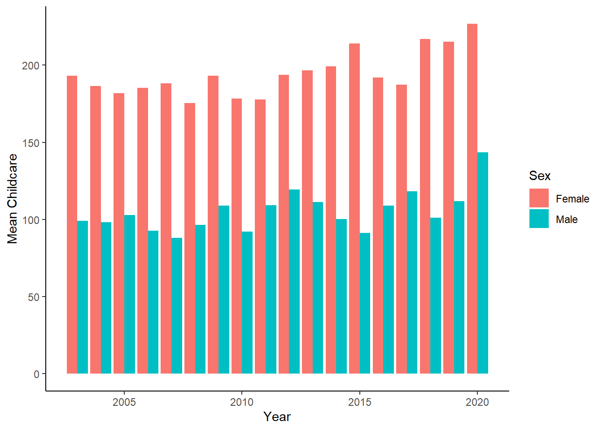
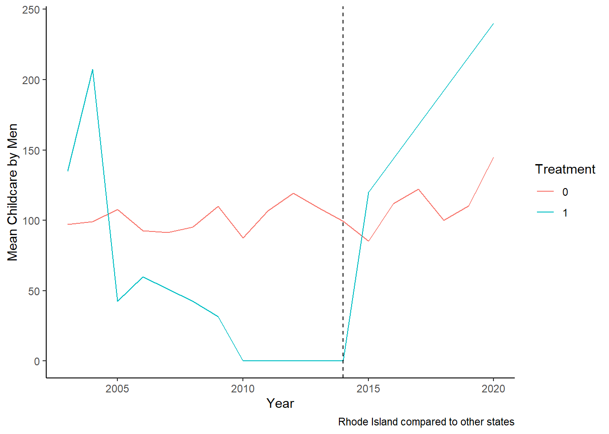
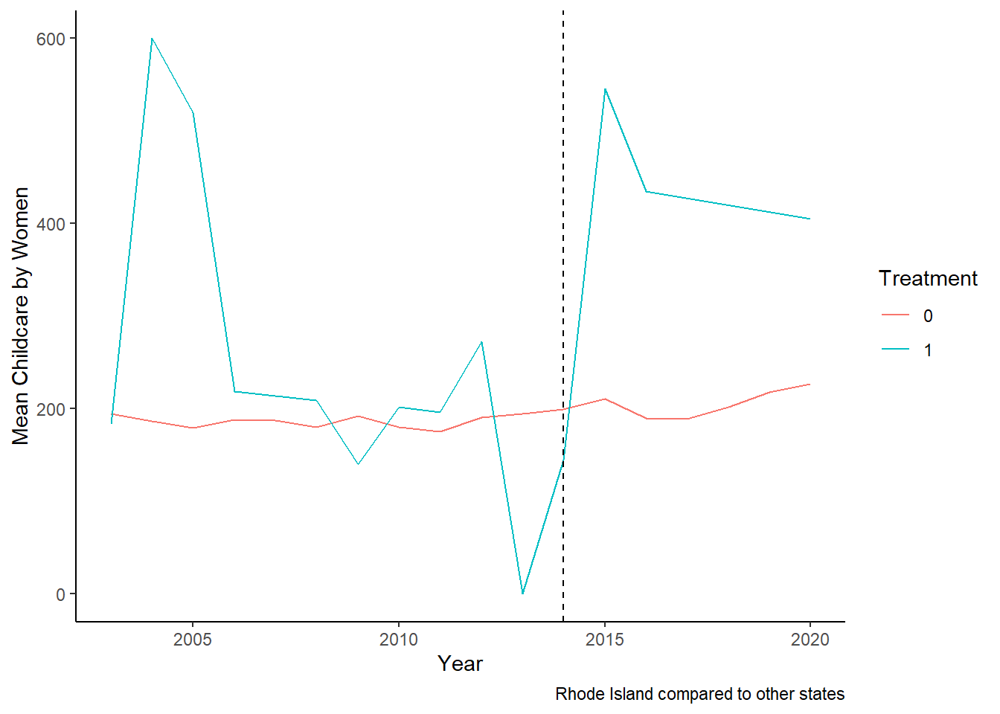
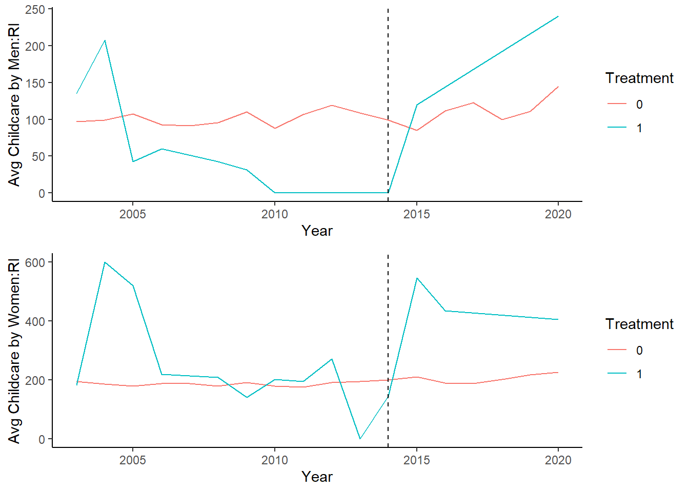
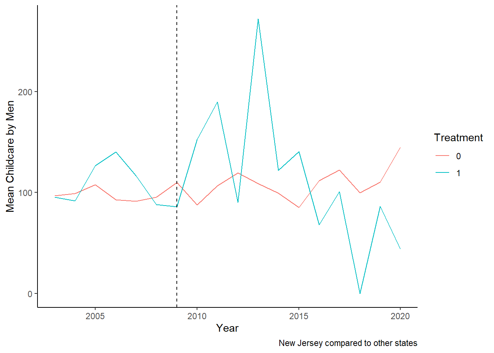
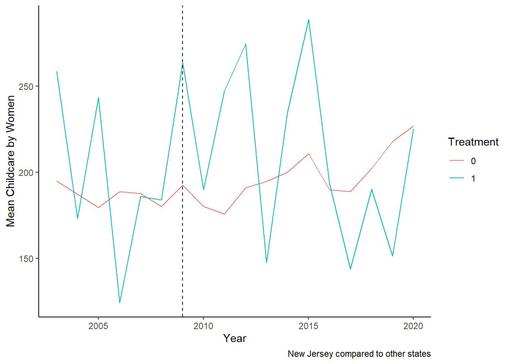
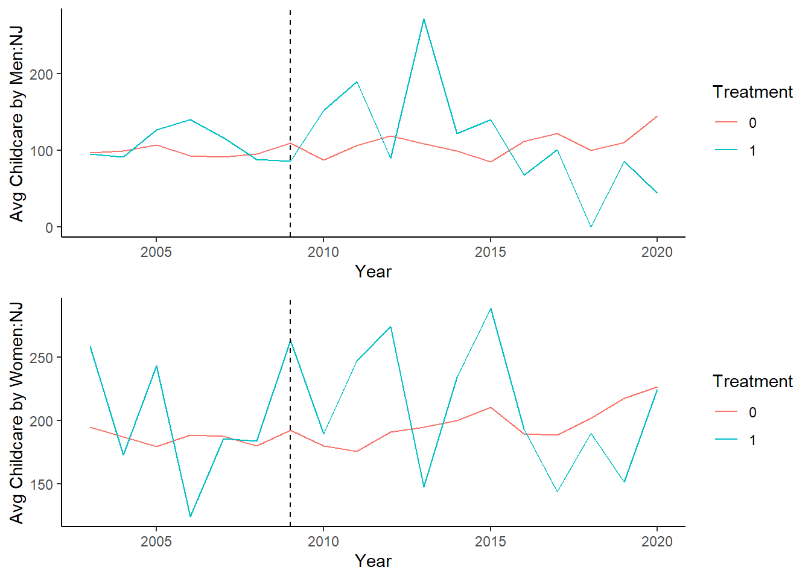

library(knitr)
library(tidyverse)
library(lubridate)
library(descr)
library(readr)
library(summarytools)
library(naniar)
library(ggplot2)
library(sf)
library(readr)
library(dplyr)
library(gsynth)
library(plm)
library(MSCMT)
library(federalregister)
library(gridExtra)
library(kableExtra)
knitr::opts_chunk$set(echo = TRUE, warning=FALSE, message=FALSE)Final Project Assignment#2: Aritra Basu
final_Project_assignment_2
visualization and analysis
Visualization and analysis
Part 1. Introduction
- Dataset(s) Introduction:
In this project, I am using ATUS data from 2003 to 2020. ATUS stands for American Time Use Survey, which is conducted by the Bureau of Labor Statistics (BLS) in the United States. The ATUS is a nationwide survey that collects information about how people spend their time on a daily basis. The survey includes questions about various activities such as work, household chores, leisure, and other activities.
The data collected from the survey is used to estimate the amount of time that people spend on various activities and to understand how time use patterns differ across different groups of people, such as by age, gender, and employment status. This information is used by policymakers, researchers, and other stakeholders to better understand how people use their time and to inform policy decisions related to labor, health, and other areas. The ATUS is conducted on an ongoing basis, with new data released annually. The survey is based on a representative sample of the U.S. population and includes both phone and in-person interviews.
My question is the following: Does paid family leave alter the pattern of childcare for parents of young children. I want to particularly focus on some state where PFL laws were passed sometime after 2004 but before 2016. Rhode Island is a good example, where the law was passed in 2014. Similarly, it was passed in New Jersey in 2009. My hypothesis is that fathers of young children in Rhode Island/New Jersey would perform more active childcare after the PFL is passed. I intend to first look at parental childcare time, trying to see if as we expect, mothers of young children spend more time on childcare than fathers. Next, I ask whether paid family leave changes the amount of childcare performed by fathers. While fathers are of primary interest, I will also look at mothers to see if they exhibit similar trends as well, for if mothers appear to perform even more childcare, the gap in care continues to persist after PFL.
I will follow a difference in difference method if there exists parallel trends, or else I plan to use synthetic control.
Differences in differences will look at difference of childcare time in treatment states and control states before and after the law is passed, and take their differnce. Thus, after eliminating state fixed effects, the effect that remains is the effect of paid family leave. On the other hand, if I do not observe parallel trends, I will resort to synthetic control estimators, that will match the treatment gwoup with an weighted average ov control states, showing counterfactual evolution in the synthetic treatment state.
I will be combining three data files.
The first is the ATUS respondent file. This is a dataset that provides detailed information about the respondents who participated in the American Time Use Survey (ATUS). The respondent file includes demographic characteristics of the respondents, such as age, sex, race, and ethnicity, as well as information about their employment status, occupation, and industry, as well as information on various activities. Each respondent has an unique ID and has their information for that row,
The second is the ATUS CPS file. The ATUS CPS (Current Population Survey) file is a dataset that combines data from the ATUS with data from the Current Population Survey (CPS). The CPS is a monthly survey conducted by the U.S. Census Bureau for the BLS that collects information about the labor force, employment, and other economic indicators. The ATUS CPS file includes information from both surveys to provide a more comprehensive picture of how people spend their time and how it relates to their labor force status.
The third is the activity summary file. This file provides summary statistics of the time use data collected in the ATUS. The detailed breakdown of categories are provided in the ATUS coding lexicon.
Part 2. Describing the data set(s)
I have merged the three datasets using their CASEIDs. Then I have retained respondents that have at least one household child of their own less than 2 years. Then I have retained only observation on respondents that do not have missing values for secondary care provision for household children. The final file that I have retains a small subset of variables.
my_data <- read_csv("D:/github/Economic History 763/ATUS Data/atusresp_0320.dat")
my_data2 <- read_csv("D:/github/Economic History 763/ATUS Data/atuscps_0320.dat")
filtered_my_data2 <- my_data2 %>%
filter(TULINENO == 1)
merged_data12 <- left_join(my_data, filtered_my_data2, by = c("TUCASEID"))
my_data3 <- read_csv("D:/github/Economic History 763/ATUS Data/atussum_0320.dat")
merged_data_final <- left_join(merged_data12, my_data3, by = c("TUCASEID"))
final_data_with_children <- merged_data_final %>%
filter(TROHHCHILD == 1, TRYHHCHILD.x < 2, TRTCC!=-1)
# write_csv(final_data_with_children, "AritraBasu_FinalProjectData/final_data.csv")
#final_data_with_children<- read_csv("AritraBasu_FinalProjectData/final_data.csv")
selected_df <- select(final_data_with_children, TUCASEID, TEAGE, TESEX, TRCHILDNUM.x, TUYEAR.x, starts_with("t0301"), starts_with("t0302"), starts_with("t0303"), GESTFIPS)
#write_csv(selected_df, "AritraBasu_FinalProjectData/selected_df.csv")
#selected_df <- read_csv("AritraBasu_FinalProjectData/selected_df.csv")
rm(my_data, my_data2, filtered_my_data2, my_data3, merged_data_final)
rm(merged_data12)I intend to compute active childcare, and hence I have retained a subset of variables whose headings start with t, for three specific activities: caring for and helping household children, children’s education and health. Thus the dataset has the unique respondent identifier, their age, sex, state, number of children, and the activity times that would be added to find the total childcare time. I could also eventually add employment information, but I have not completely made up my mind on that.
Using the function mutate, I have created the variable childcare. Here I am presenting the summary statistics for childcare, where the respondents have been grouped by sex and year and state. But alternative groupings (such as by only sex and year) are possible.
data_ready <- selected_df %>%
mutate(Childcare = rowSums(select(., starts_with("t0301"))) + rowSums(select(., starts_with("t0302"))) + rowSums(select(., starts_with("t0303")))) %>%
mutate(Sex_cat = ifelse(TESEX == 1, "Male", "Female"))%>%
rename(Sex = TESEX, Year= TUYEAR.x, State=GESTFIPS, AGE= TEAGE, Child_number= TRCHILDNUM.x )
glimpse(data_ready)Rows: 14,732
Columns: 29
$ TUCASEID <dbl> 2.003010e+13, 2.003010e+13, 2.003010e+13, 2.003010e+13, 2…
$ AGE <dbl> 41, 39, 21, 29, 36, 29, 37, 34, 30, 29, 30, 24, 35, 35, 2…
$ Sex <dbl> 2, 2, 2, 1, 2, 1, 2, 2, 1, 1, 2, 2, 1, 2, 2, 2, 2, 1, 2, …
$ Child_number <dbl> 2, 2, 3, 2, 1, 1, 3, 6, 1, 3, 2, 1, 3, 4, 1, 5, 2, 2, 2, …
$ Year <dbl> 2003, 2003, 2003, 2003, 2003, 2003, 2003, 2003, 2003, 200…
$ t030101 <dbl> 60, 283, 116, 52, 410, 40, 215, 75, 55, 0, 100, 50, 105, …
$ t030102 <dbl> 0, 60, 0, 0, 0, 0, 20, 0, 0, 0, 0, 0, 0, 0, 0, 0, 30, 0, …
$ t030103 <dbl> 0, 0, 0, 0, 0, 0, 0, 20, 0, 0, 50, 5, 0, 30, 0, 0, 0, 0, …
$ t030104 <dbl> 0, 0, 0, 0, 0, 0, 0, 0, 0, 0, 0, 0, 0, 0, 0, 0, 0, 0, 0, …
$ t030105 <dbl> 0, 0, 0, 0, 0, 0, 0, 0, 0, 0, 0, 0, 0, 0, 0, 0, 0, 0, 0, …
$ t030108 <dbl> 0, 10, 0, 0, 0, 10, 0, 0, 0, 0, 0, 0, 0, 0, 0, 0, 0, 0, 0…
$ t030109 <dbl> 0, 0, 60, 0, 0, 0, 0, 0, 0, 0, 0, 0, 0, 0, 0, 0, 0, 0, 0,…
$ t030110 <dbl> 0, 0, 0, 0, 0, 0, 85, 0, 0, 0, 0, 0, 0, 0, 0, 0, 0, 0, 0,…
$ t030111 <dbl> 0, 0, 0, 0, 0, 0, 0, 0, 0, 0, 0, 0, 0, 0, 0, 0, 0, 0, 0, …
$ t030112 <dbl> 0, 0, 0, 0, 0, 10, 11, 0, 0, 0, 0, 0, 22, 0, 0, 0, 0, 0, …
$ t030186 <dbl> 0, 0, 0, 0, 0, 0, 10, 0, 0, 0, 0, 0, 0, 0, 0, 0, 0, 0, 0,…
$ t030199 <dbl> 0, 0, 0, 0, 0, 0, 0, 0, 0, 0, 0, 0, 0, 0, 0, 0, 0, 0, 0, …
$ t030201 <dbl> 0, 0, 0, 0, 0, 0, 0, 0, 0, 0, 0, 0, 35, 0, 0, 0, 0, 0, 0,…
$ t030202 <dbl> 0, 0, 0, 0, 0, 0, 0, 0, 0, 0, 0, 0, 0, 0, 0, 0, 0, 0, 0, …
$ t030203 <dbl> 0, 0, 0, 0, 0, 0, 0, 435, 0, 0, 0, 0, 0, 0, 0, 0, 0, 0, 0…
$ t030204 <dbl> 0, 0, 0, 0, 0, 0, 0, 0, 0, 0, 0, 0, 0, 0, 0, 0, 0, 0, 0, …
$ t030299 <dbl> 0, 0, 0, 0, 0, 0, 0, 0, 0, 0, 0, 0, 0, 0, 0, 0, 0, 0, 0, …
$ t030301 <dbl> 0, 25, 0, 0, 0, 0, 170, 0, 0, 0, 0, 0, 0, 0, 0, 0, 0, 0, …
$ t030302 <dbl> 0, 0, 0, 0, 0, 0, 0, 0, 0, 0, 0, 0, 0, 0, 0, 0, 0, 0, 0, …
$ t030303 <dbl> 0, 0, 0, 0, 0, 0, 0, 0, 0, 0, 0, 0, 0, 0, 0, 0, 0, 0, 0, …
$ t030399 <dbl> 0, 0, 0, 0, 0, 0, 0, 0, 0, 0, 0, 0, 0, 0, 0, 0, 0, 0, 0, …
$ State <dbl> 6, 17, 6, 8, 8, 19, 26, 27, 36, 39, 50, 55, 55, 4, 4, 6, …
$ Childcare <dbl> 60, 378, 176, 52, 410, 60, 511, 530, 55, 0, 150, 55, 162,…
$ Sex_cat <chr> "Female", "Female", "Female", "Male", "Female", "Male", "…summary_stats <- data_ready %>%
group_by(Sex_cat, Year, State) %>%
summarise(
Mean = mean(Childcare, na.rm = TRUE),
Quantile1 = quantile(Childcare, c(0.25), q1 = c(0.25), na.rm = TRUE),
Median = median(Childcare, na.rm = TRUE),
Quantile3 = quantile(Childcare, c(0.75), q3 = c(0.75), na.rm = TRUE),
SD = sd(Childcare, na.rm = TRUE),
min = min(Childcare, na.rm = TRUE),
max = max(Childcare, na.rm = TRUE)
) %>%
arrange(State, Year, Sex_cat)
head (summary_stats)Part 3.Visualization
- Analysis:
- First, I will show whether there exists difference in active care time between mothers and fathers. A simple grouped bar chart could drive home the point. We can see that women perform the bulk of active childcare, relative to men.
Childcare_by_SexandYear <- data_ready %>%
group_by(Sex_cat, Year) %>%
summarise(
Mean = mean(Childcare, na.rm = TRUE),
Quantile1 = quantile(Childcare, c(0.25), q1 = c(0.25), na.rm = TRUE),
Median = median(Childcare, na.rm = TRUE),
Quantile3 = quantile(Childcare, c(0.75), q3 = c(0.75), na.rm = TRUE),
SD = sd(Childcare, na.rm = TRUE),
min = min(Childcare, na.rm = TRUE),
max = max(Childcare, na.rm = TRUE)
)
Childcare_by_SexandYear_table <- Childcare_by_SexandYear %>%
pivot_wider(
names_from = Sex_cat,
values_from = c(Mean, Quantile1, Median, Quantile3, SD, min, max),
names_glue = "{Sex_cat}_{.value}"
) %>%
select(Year, everything()) %>%
arrange(Year)
head(Childcare_by_SexandYear_table)ggplot(Childcare_by_SexandYear, aes(x = Year, y = Mean, fill = Sex_cat)) +
geom_bar(stat = "identity", position = position_dodge()) +
labs(x = "Year", y = "Mean Childcare", fill = "Sex") +
theme_classic()
We can clearly observe that women bear disproportionately high amount of carework.
- Next, I would use simple summary statistic, say the average of childcare time by fathers/mothers before and after the law is passed in the treatment state (say Rhode Island), and control states (thus excluding states in which paid family leave has passed.)
Here, in each case I keep only the treated state that I want to look at, and remove other states. That is, while looking at Rhode Island, I remove New Jersey and California.
Childcare_by_SexandYear_M_RI <- data_ready %>%
filter(Sex_cat=="Male") %>%
filter(State!=6 & State!=34)%>%
mutate(treatment = ifelse(State==44, 1, 0))%>%
group_by(Year, treatment ) %>%
summarize(mean_Childcare = mean(Childcare, na.rm = TRUE))
ggplot(Childcare_by_SexandYear_M_RI, aes(x = Year, y = mean_Childcare, color = as.factor(treatment), group = treatment, fill = as.factor(treatment))) +
geom_line() +
geom_vline(xintercept = 2014, linetype = "dashed", color = "black") +
labs(x = "Year", y = "Mean Childcare by Men", color = "Treatment", fill = "Treatment", caption ="Rhode Island compared to other states") +
theme_classic()
Another way of looking at equalization would be looking at what is happening to women in Rhode Island.
Childcare_by_SexandYear_F_RI <- data_ready %>%
filter(Sex_cat=="Female") %>%
filter(State!=6 & State!=34)%>%
mutate(treatment = ifelse(State==44, 1, 0))%>%
group_by(Year, treatment ) %>%
summarize(mean_Childcare = mean(Childcare, na.rm = TRUE))
ggplot(Childcare_by_SexandYear_F_RI, aes(x = Year, y = mean_Childcare, color = as.factor(treatment), group = treatment, fill = as.factor(treatment))) +
geom_line() +
geom_vline(xintercept = 2014, linetype = "dashed", color = "black") +
labs(x = "Year", y = "Mean Childcare by Women", color = "Treatment", fill = "Treatment", caption ="Rhode Island compared to other states") +
theme_classic()
What is we look at the two together:
# Combine plots
plot1 <- ggplot(Childcare_by_SexandYear_M_RI, aes(x = Year, y = mean_Childcare, color = as.factor(treatment), group = treatment, fill = as.factor(treatment))) +
geom_line() +
geom_vline(xintercept = 2014, linetype = "dashed", color = "black") +
labs(x = "Year", y = "Avg Childcare by Men:RI", color = "Treatment", fill = "Treatment") +
theme_classic()
plot2 <- ggplot(Childcare_by_SexandYear_F_RI, aes(x = Year, y = mean_Childcare, color = as.factor(treatment), group = treatment, fill = as.factor(treatment))) +
geom_line() +
geom_vline(xintercept = 2014, linetype = "dashed", color = "black") +
labs(x = "Year", y = "Avg Childcare by Women:RI", color = "Treatment", fill = "Treatment") +
theme_classic()
grid.arrange(plot1, plot2)
Thus, we observe two things here. First, that average childcare performed by both men and women rises. But the burden seems to fall largely on women.
Now, let’s look at New Jersey:
Childcare_by_SexandYear_M_NJ <- data_ready %>%
filter(Sex_cat=="Male") %>%
filter(State!=6 & State!=44)%>%
mutate(treatment = ifelse(State==34, 1, 0))%>%
group_by(Year, treatment ) %>%
summarize(mean_Childcare = mean(Childcare, na.rm = TRUE))
ggplot(Childcare_by_SexandYear_M_NJ, aes(x = Year, y = mean_Childcare, color = as.factor(treatment), group = treatment, fill = as.factor(treatment))) +
geom_line() +
geom_vline(xintercept = 2009, linetype = "dashed", color = "black") +
labs(x = "Year", y = "Mean Childcare by Men", color = "Treatment", fill = "Treatment", caption ="New Jersey compared to other states") +
theme_classic()
Childcare_by_SexandYear_F_NJ <- data_ready %>%
filter(Sex_cat=="Female") %>%
filter(State!=6 & State!=44)%>%
mutate(treatment = ifelse(State==34, 1, 0))%>%
group_by(Year, treatment ) %>%
summarize(mean_Childcare = mean(Childcare, na.rm = TRUE))
ggplot(Childcare_by_SexandYear_F_NJ, aes(x = Year, y = mean_Childcare, color = as.factor(treatment), group = treatment, fill = as.factor(treatment))) +
geom_line() +
geom_vline(xintercept = 2009, linetype = "dashed", color = "black") +
labs(x = "Year", y = "Mean Childcare by Women", color = "Treatment", fill = "Treatment", caption ="New Jersey compared to other states") +
theme_classic()
Let us combine the two:
# Combine plots
plot3 <- ggplot(Childcare_by_SexandYear_M_NJ, aes(x = Year, y = mean_Childcare, color = as.factor(treatment), group = treatment, fill = as.factor(treatment))) +
geom_line() +
geom_vline(xintercept = 2009, linetype = "dashed", color = "black") +
labs(x = "Year", y = "Avg Childcare by Men:NJ", color = "Treatment", fill = "Treatment") +
theme_classic()
plot4 <- ggplot(Childcare_by_SexandYear_F_NJ, aes(x = Year, y = mean_Childcare, color = as.factor(treatment), group = treatment, fill = as.factor(treatment))) +
geom_line() +
geom_vline(xintercept = 2009, linetype = "dashed", color = "black") +
labs(x = "Year", y = "Avg Childcare by Women:NJ", color = "Treatment", fill = "Treatment") +
theme_classic()
grid.arrange(plot3, plot4)
We can see that childcare performed by both men and women increase initially, but then eventually decline. This could potentially be due to other factors, including increases in paid employment. But exploring this is beyond the scope of this assignment.
Given that we do not observe exactly parallel trends, I think synthetic control would be a better option, and would be the next task.